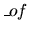
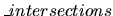
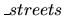
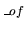
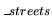

Consider a town where all the streets are one-way and each street leads from one
intersection to another. It is also known that starting from an intersection and
walking through town's streets you can never reach the same intersection i.e. the
town's streets form no cycles.
With these assumptions your task is to write a program that finds the minimum number
of paratroopers that can descend on the town and visit all the intersections of this
town in such a way that more than one paratrooper visits no intersection. Each paratrooper
lands at an intersection and can visit other intersections following the town streets.
There are no restrictions about the starting intersection for each paratrooper.
Your program should read sets of data. The first line of the input file contains
the number of the data sets. Each data set specifies the structure of a town and
has the format:
no
no
S1 E1
S2 E2
..............
Sno Eno
The first line of each data set contains a positive integer
no
(greater than 0 and less or equal to 120), which is the number of intersections in the
town. The second line contains a positive integer
no, which is the
number of streets in the town. The next
no lines, one for each street
in the town, are randomly ordered and represent the town's streets. The line corresponding
to street k (
k  no ) consists of two positive integers,
separated by one blank: Sk (
1 Sk no) -- the
number of the intersection that is the start of the street, and Ek
(
1 Ek no) -- the number of the intersection
that is the end of the street. Intersections are represented by integers from 1 to
no.
no ) consists of two positive integers,
separated by one blank: Sk (
1 Sk no) -- the
number of the intersection that is the start of the street, and Ek
(
1 Ek no) -- the number of the intersection
that is the end of the street. Intersections are represented by integers from 1 to
no.
There are no blank lines between consecutive sets of data. Input data are correct.
The result of the program is on standard output. For each input data set the program
prints on a single line, starting from the beginning of the line, one integer: the
minimum number of paratroopers required to visit all the intersections in the town.
2
4
3
3 4
1 3
2 3
3
3
1 3
1 2
2 3
2
1